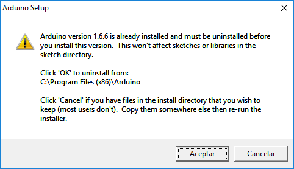
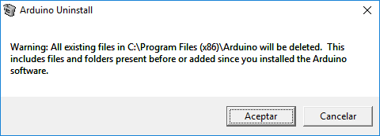
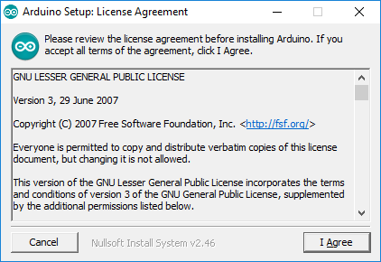
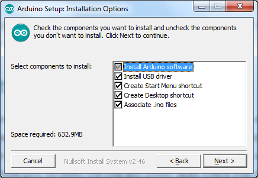
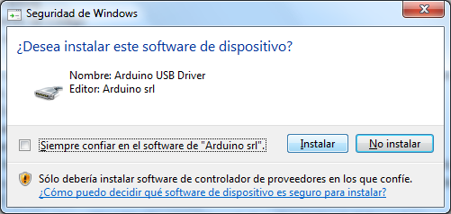
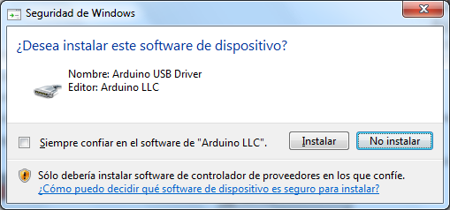
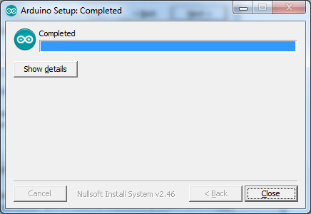
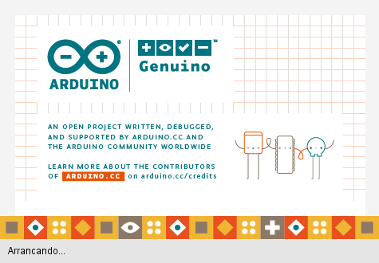
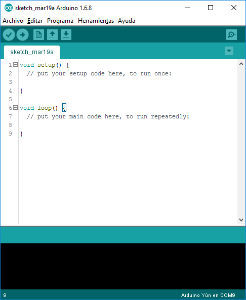
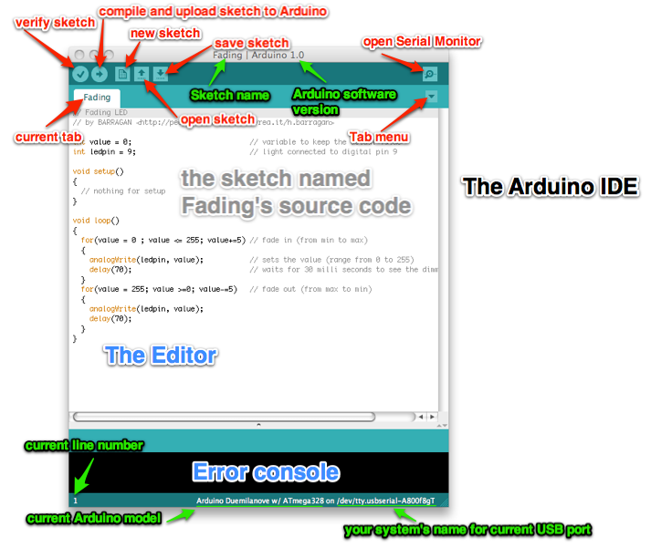

IDE EN ARDUINO
¿Que es el IDE?
Para empezar a programar la placa Arduino es necesario descargar un IDE (Integrated Development Environment). El IDE es un conjunto de herramientas de software que permiten a los programadores desarrollar y grabar todo el código necesario para hacer que nuestro Arduino funcione como queramos. El IDE de Arduino nos permite escribir, depurar, editar y grabar nuestro programa (llamados “sketches” en el mundo Arduino) de una manera sumamente sencilla, en gran parte a esto se debe el éxito de Arduino, a su accesibilidad.
instalacion del IDE arduino
Descargar la última versión del IDE de Arduino desde: http://arduino.cc/en/Main/Software
Elegir la opción de Windows Installer, aunque también es posible descargar la versión comprimida en zip y se puede decir que es una versión portable o para aquellos que no tengan privilegios suficientes para instalar aplicaciones o simplemente se quiera hacer una instalación manual.
Para actualizar una versión anterior del IDE de Arduino, el procedimiento es el mismo que el de una instalación inicial, puesto que el instalador detecta una versión anterior y la desinstala manteniendo todas nuestras configuraciones, librerías y sketches anteriores.
En caso que queramos mantener varias versiones del IDE en el mismo ordenador, simplemente hacemos la instalación manual en directorios diferentes y las configuraciones, librerías y sketches son compartidas por las diferentes versiones del IDE instaladas.
Ejecutar el instalador descargado. Si existe una versión anterior el instalador nos avisa y nos desinstala. En el caso que hayamos hecho modificaciones en el directorio de instalación las perderemos.


Durante la instalación aceptamos el acuerdo de licencia.

Marcar todas las opciones y elegir directorio de instalación, generalmente C:\Program Files (x86)\Arduino\:

Permitir instalar los drivers (si lo solicita):


Y ya está instalado:

En este momento ya tenemos instalado el IDE en nuestro ordenador. Con las nuevas versiones del IDE de Arduino no es necesario instalar los drivers en Windows al venir integrados en el IDE y estos tienen las firmas correspondientes.
Ejecutar la aplicación:

Y este es el aspecto del IDE:

El IDE de Arduino es multiplataforma y en caso de instalar el IDE Arduino en otros sistemas operativos estas son las instrucciones:
Windows: https://www.arduino.cc/en/Guide/Windows
Mac OSX: http://arduino.cc/en/Guide/MacOSX
Linux: https://www.arduino.cc/en/Guide/Linux y http://playground.arduino.cc/Learning/Linux
Conozcamos este nuevo entorno de trabajo:

ATRAS<-----